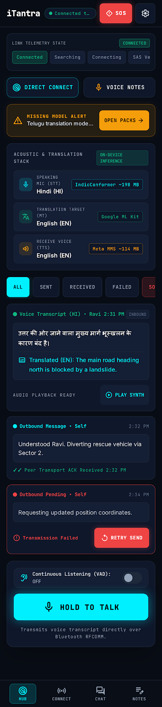
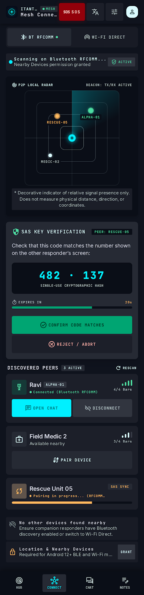
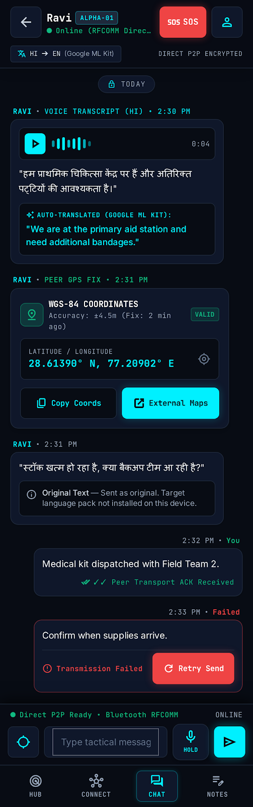
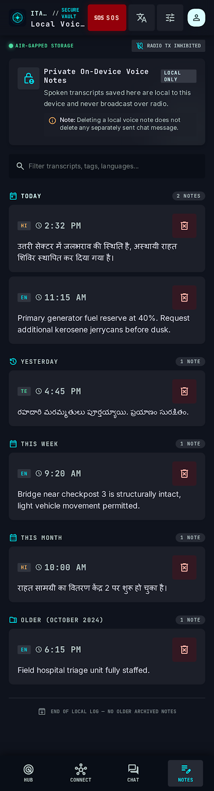
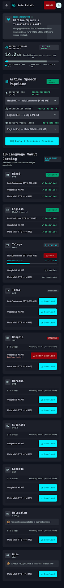
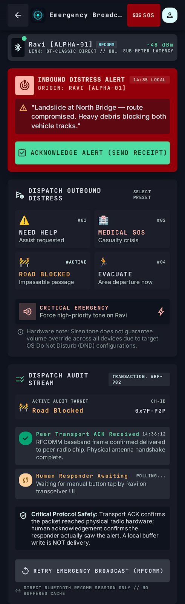
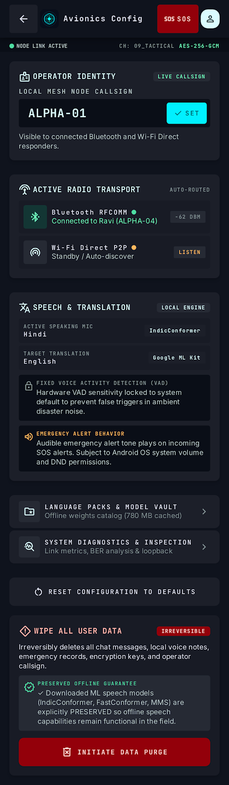
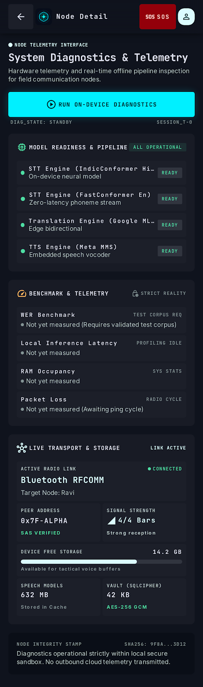

Before implementation, read the screen-by-screen corrections. Some prototype controls and telemetry labels still differ from the app.






Voice Notes
Local text transcripts grouped by date with confirmed delete.


Language Packs
Ten-language catalog and STT, translation, and TTS readiness.





